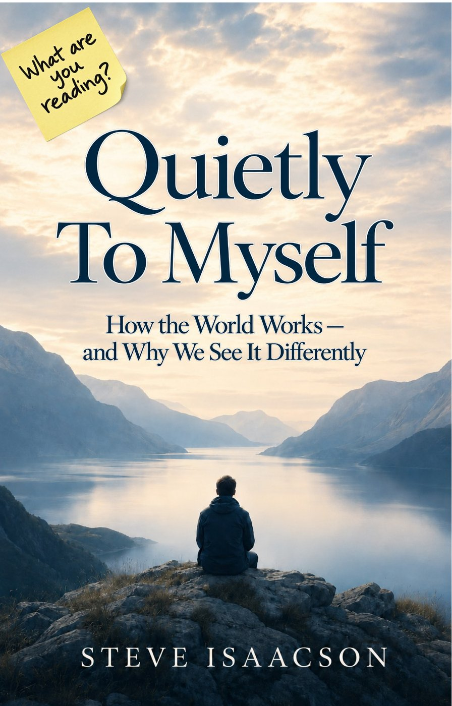

Why do intelligent, sincere people see the same world so differently?
Maybe the problem is not that everyone else is stupid or evil (although they might be). Maybe the problem is that we keep arguing from different starting points, using the same words to mean different things, and pretending that moral intuitions are self-evident when in fact they are not.
Quietly To Myself is an informal, argumentative tour through some of today's loudest debates. It asks what we can know, what we should value, whether science can determine morality, when compassion requires an exception, and who gets to decide when individuals, society, and the state disagree.
- Edition
- First edition, 2026
- ISBN
- 979-8-1606-6593-1
- Format
- Paperback, 5.5″ × 8.5″
- Publisher
- Independently published
Some of the questions
- Is abortion murder?
- Does God exist?
- Can morality survive without religion?
- Is racism sometimes rational?
- Are reparations fair?
- Should we tax the rich?
- What’s the price of free speech?
This book is not about taking sides. It’s about thinking clearly in an age of ideology—about slowing down, defining terms, following arguments, and sometimes asking the uncomfortable question:
What if I’m wrong?
The world is complicated. Human beings are fallible. Our knowledge is limited. But none of that relieves us of the responsibility to think carefully—to think harder.
This book is an invitation to do exactly that.
How the book works
The arguments, it seems, rarely stem from the surface issues. The debate over abortion isn’t just about an unborn child or a woman’s right to choose. The debate about free speech isn’t just about words. The debate about taxing the rich isn’t just about money. It’s the deeper-level disagreements—stemming from mostly unexamined assumptions about reality, knowledge, and value—that are at the crux of the issue.
Part I The Structure of the World
A bit of philosophical analysis—ways of clarifying meaning, uncovering hidden assumptions, and thinking more carefully. Then three of philosophy’s oldest questions: What is real? How do we know? What is value?
Part II Playing With Ideas
The philosophical toolbox put to work on controversial topics—not because they’re easy, but because they’re interesting, challenging, and more fun to play with. Along the way, a simple framework for fairness: treat people by the same rules unless compassion or a relevant difference provides a good reason not to.
Part III Game Over
A small step back to catch our breath. The goal is not to find certainty, but to understand why we believe what we believe—and why someone else might see the world differently.
Contents
- Origin Story
Born nice,
post-puberty smart-ass,
accidental philosophy class. - Introduction
Part I The Structure of the World
- Where Do We Begin?
Begin where you actually are—with the beliefs you already have—and examine them honestly. Paraphrasing Charles Sanders Peirce
- The Parable of the Squirrel
The majority seemed to think that the distinction had assuaged the dispute. William James, Pragmatism
- Intellectual By-Products
An older fish greets two young fish: “Morning, boys, how’s the water?” They continue on their way. After a while, one turns to the other and asks, “What the hell is water?” Adapted from David Foster Wallace, “This Is Water”
- Metaphysics: What Is Real?
Reality is that which, when you stop believing in it, doesn’t go away. Philip K. Dick
- Epistemology: How Do We Know?
Fallibilism: the view that human beings may be mistaken, even about beliefs supported by strong justification. Adapted from Jonathan Rauch, The Constitution of Knowledge
- Axiology: What Is Value?
Nobody knows anything. William Goldman, Adventures in the Screen Trade
Part II Playing With Ideas
- Who Decides? Individuals, Society, and the State
Over himself, over his own body and mind, the individual is sovereign. John Stuart Mill, On Liberty
- The Price of Free Speech
Is it legal for me to say “I endorse hate speech”? I don’t want people forced to hide what they think. I want to know who hates me. Patrice O’Neal, stand-up comedian
- Abortion Trade-Offs
There are no solutions. There are only trade-offs. Thomas Sowell
- Does God Exist?
It is wrong always, everywhere, and for anyone, to believe anything upon insufficient evidence. W. K. Clifford, “The Ethics of Belief”
- Where Do Morals Come From?
We now see something different, and can no longer naïvely go on playing. Ludwig Wittgenstein
- Can Science Determine Human Values?
Science can only ascertain what is, but not what should be, and outside of its domain value judgments of all kinds remain necessary. Albert Einstein, “Science and Religion”
- When It’s Good to Be a Racist
“How do we get rid of racism?” Mike Wallace,
Whitejournalist “Stop talking about it. I’m going to stop calling you a White man, and I’m going to ask you to stop calling me a Black man.” Morgan Freeman,Blackactor - The Case Against Slavery Reparations
Two wrongs don’t make a right. Traditional proverb
- The DEI Debate: What Fairness Really Means
His color, not his character, determines the place he shall hold and the kind of treatment he shall receive. Frederick Douglass
- Sex, Gender, and the Trans Question
First, do no harm. Hippocratic tradition
- Should Rich People Pay More Taxes?
The fact that you have something that someone else doesn’t have doesn’t an injustice make. Carl Benjamin
Part III Game Over
- Why Your Worldview Matters
You get changed by the game you play, to your advantage or to your disadvantage. Sam Harris
- Afterword
You know which gazelle gets eaten by the lion? The one that strays from the pack. John Whitesides, as quoted by Andrew Ference
- Coda
We are both onlookers and actors in the great drama of existence. Niels Bohr
- Notes
- About the Author
Man is thus his own greatest mystery. He does not understand the vast veiled universe into which he has been cast, for the reason that he does not understand himself. He comprehends but little of his organic processes and even less of his unique capacity to perceive the world about him, to reason and to dream. Least of all does he understand his noblest and most mysterious faculty: the ability to transcend himself and perceive himself in the act of perception.
What early readers said
- “Not helpful.”
- “Explain more.”
- “I am not convinced.”
- “What’s your problem?”
- “It’s not exactly a page-turner.”
From the Acknowledgments: “I’m grateful to family and friends who read this book when it was at its worst … and who nevertheless kept offering invaluable feedback.” The opinions expressed are the author’s own, of course, as are any remaining errors or wackadoo conclusions.
Get in touch
Questions, disagreements, and arguments welcome.